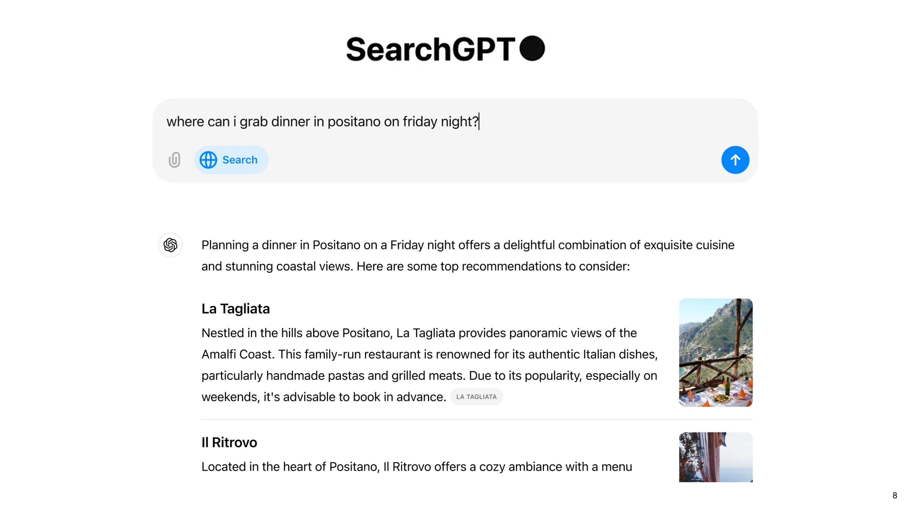
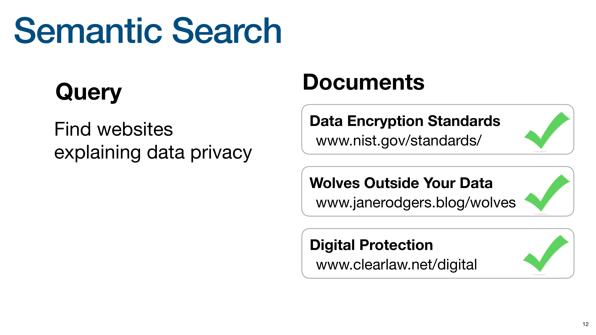
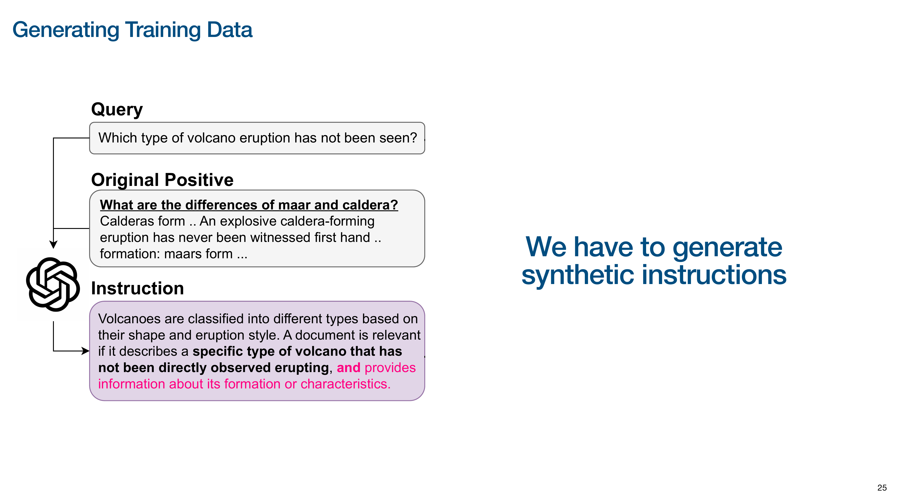
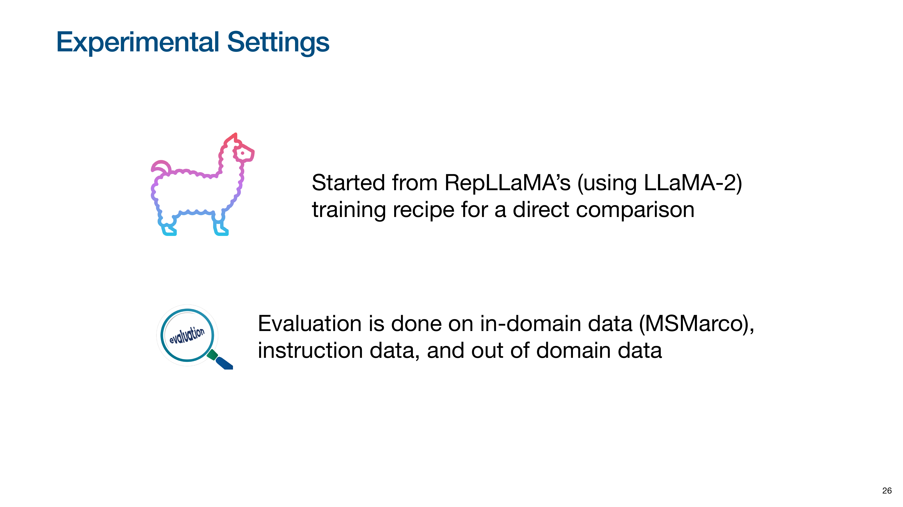
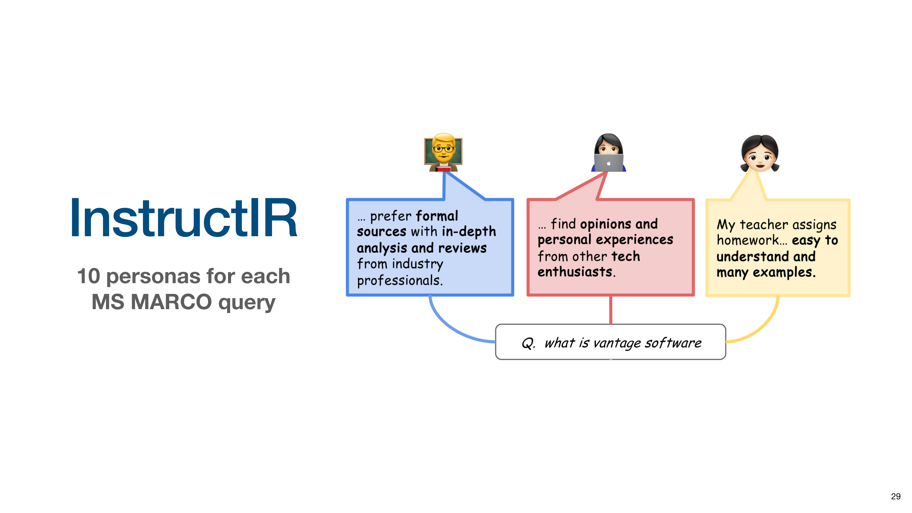
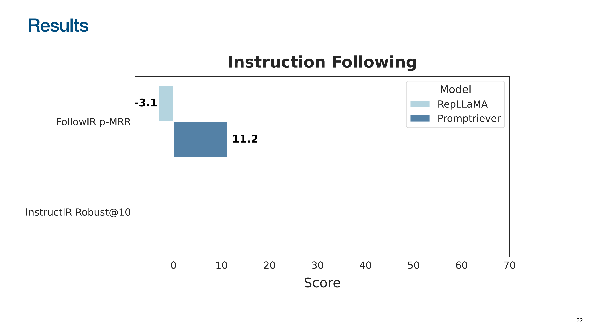
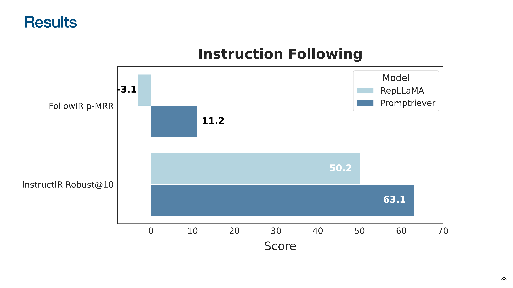

P3: Optimizing Retrieval with Reasoning Models
As part of our LLM Evals course, I hosted Orion Weller from Johns Hopkins University for our 5-part mini-series on evaluating and optimizing RAG. Orion’s research focuses on embedding the instruction-following and reasoning capabilities of modern Large Language Models (LLMs) directly into the retrieval process.
In his talk, Orion argues that while LLMs have improved RAG, the core retrieval step has remained static. He introduces a paradigm where instruction-following and reasoning are baked directly into retrieval models, a fundamental shift from using LLMs for query rewriting or as generic rerankers.
His approach is showcased with two models:
Promptriever (bi-encoder): Creates “instruction-aware” embeddings by training on a novel dataset containing instruction negatives. These are examples where a document is relevant to a query but not its specific instruction (e.g., “find a document using a metaphor”). This forces the model to encode abstract instructions directly into the query embedding, allowing it to surface documents from a massive corpus that a standard retriever would miss.
Rank1 (reranker): A smaller model fine-tuned by distilling the reasoning traces of a larger model. It generates an explicit, auditable chain of thought to assess relevance. This specialized training makes it exceptionally good at reasoning, allowing it to uncover novel, relevant documents invisible to previous systems.
Below is an annotated version of his presentation with timestamped links.
👉 These are the kinds of things we cover in our AI Evals course. You can learn more about the course here. 👈
Annotated Presentation
Title slide for Orion Weller’s talk on integrating instruction following and reasoning into information retrieval (IR).

The talk begins by highlighting the user-facing interfaces of modern LLMs like ChatGPT, which have set new expectations for how we interact with AI. One key capability of LLMs is instruction following: executing complex, multi-part natural language instructions with high fidelity.

Orion shows the result of a pirate-themed haiku prompt. The model successfully adheres to all constraints: it generates a haiku, maintains a pirate style, and mentions “RAG,” demonstrating a level of instruction following that is a recent and significant advancement.

A second key capability is reasoning, also known as test-time compute or “thinking.” The slide shows a model verbalizing its thought process to solve a problem, generating intermediate “thinking tokens” that outline its step-by-step logic before providing the final answer. This ability to break down and reason about a task is a major focus in the LLM community.
With these LLM capabilities established, Orion poses the talk’s central question: how can we integrate these instruction-following and reasoning abilities directly into the retrieval process, moving beyond simply using LLMs to summarize search results?

To illustrate how little the search paradigm has changed, Orion shows Google’s interface from 1999.
He contrasts it with a modern Google search bar. Despite 26 years of development, the fundamental interaction remains the same: a user types keywords, and the system matches them to return a list of links.

This slide shows a modern “SearchGPT” style interface, which provides a generated, conversational answer.
Despite the interface, Orion argues the underlying retrieval process has not evolved. Even in advanced systems, the LLM is often just a “wrapper.” The system sends the query to a traditional search engine, gets back a standard list of results, and then uses the LLM to summarize them. The retrieval step itself hasn’t gained the new capabilities of the LLM. Orion’s work aims to change this.
To illustrate current limitations, Orion starts with Keyword Search, which relies on exact lexical matching. Given a query and three documents, keyword search matches “Data Encryption Standards” and “Wolves Outside Your Data” because they contain the keyword “data.”
It fails to retrieve “Digital Protection” because it lacks the keyword “data,” even though “digital” is semantically similar, highlighting the brittleness of keyword-only approaches.

The next evolution is Semantic Search, which matches based on meaning, often by representing queries and documents as vectors in a shared semantic space. A good semantic search model would retrieve all three documents, as it understands the relationship between “data” and “digital,” and “privacy” and “protection.” This improves on keyword search but still falls short of true instruction following.

Orion introduces the next paradigm: Instruction-based Search, where the query is a nuanced command. The user wants to find documents about data privacy that also use “extended metaphors.”
An instruction-based search system should understand this meta-level constraint and retrieve only the “Wolves Outside Your Data” document, which uses a metaphorical title. It correctly identifies that the other two documents, while topically relevant, do not meet the stylistic instruction.
This example illustrates the limitation of reranking results of standard semantic search (a popular approach in RAG). Such an approach would fail here because a semantic search model has no way to understand the constraint “uses an extended metaphor.” It would rank documents based only on their relevance to “data privacy,” meaning the “Wolves” document might not score high enough to even be considered by the reranker. To solve this, the instruction must influence the initial retrieval to change which documents are considered relevant in the first place.

Orion pushes the concept to its extreme with Prompt and Reasoning-based Search. The query now includes instructions about the desired behavior of the search engine, such as “Have really high recall or I will lose my job.”
A traditional search engine would misinterpret this, likely searching for documents containing the word “recall.” An advanced, reasoning-based retriever should understand the user’s intent and adjust its retrieval strategy, for example by lowering its relevance threshold to ensure high recall.

What is an instruction in the context of IR? Orion breaks it down into several categories.
First, instructions can refer to document attributes like date, length, or source. A retriever should understand these from document content without needing pre-processed metadata. Second, they can involve NLU aspects, such as document sentiment or writing style. Third, they can include logical conditions, combining multiple constraints with operators like AND, OR, and NOT.
The space of possible instructions mirrors the complexity of natural language.
We are already used to prompting LLMs with complex instructions. Since modern retrievers are built on LLMs, we should be able to interact with them in the same way.

Orion introduces two models from his research that embody these principles. First is Promptriever, a fast embedding model for following instructions during initial retrieval.
Second is Rank1, a powerful but slower reranker that uses reasoning and test-time compute for nuanced relevance judgments.
First, we will dive into Promptriever. The associated paper’s title is “Instruction-Trained Retrievers Can Be Prompted Like Language Models,” a collaboration between Johns Hopkins and Samaya AI.
Orion explains the two main retrieval architectures. A Bi-Encoder (dense retriever) creates separate query and document embeddings for fast comparison, making it highly scalable. A Cross-Encoder (reranker) processes the query and document together for deeper interaction at a higher computational cost. Promptriever is a bi-encoder.

The main research question was how to enable fast, scalable bi-encoders to understand complex instructions.
The missing ingredient was training data. Existing retrieval datasets like MSMARCO lack instructions because users don’t type them into traditional search engines. Creating a new dataset with instruction-based queries was necessary to teach the model this capability.

This slide illustrates the process of generating the training data, starting with a standard query. The process uses an existing query-document pair from a standard dataset.
The core of the data generation is to use a LLM to look at the query and the relevant document and synthetically generate a detailed instruction that makes the relevance criteria more specific. A crucial part of this process was also generating instruction negatives, which are documents that are relevant to the query but irrelevant to the instruction, forcing the model to pay attention to the new constraints.

To ensure a fair comparison, they started with the training recipe from RepLLaMA, an existing model that fine-tunes LLaMA-2 for retrieval, and only added their new instruction-based training data.The evaluation was comprehensive, testing on in-domain data (MSMARCO), new instruction-following datasets, and out-of-domain datasets to measure generalization.
This slide introduces the two key instruction-following datasets for evaluation.

The first is FollowIR, where queries are modified with clarifying instructions. The p-MRR metric measures the ability to adapt, with positive scores indicating successful instruction following.

The second is InstructIR, which associates queries with user personas (e.g., student, professional). The model must understand the persona’s implicit needs to retrieve appropriate documents.
This slide introduces the experiment results.

On FollowIR, the baseline RepLLaMA (and all prior embedding models) scored negatively, performing worse when given an instruction. Promptriever is the first to achieve a positive score, demonstrating that bi-encoders can learn to follow instructions.

On InstructIR, Promptriever again significantly outperforms the baseline by understanding the nuanced needs of different user personas.
How do these models perform on standard datasets without pre-defined instructions?
When evaluating on standard data, what prompt should be used?
The first option is using no prompt, the standard for evaluating existing retrieval models.
The second option, unique to instruction-following models, is to experiment with generic prompts (e.g., “Find the most relevant document”) and use the best-performing one, a form of prompt engineering for retrieval.
This slide shows generic prompts created to encourage more careful retrieval, such as “Be careful when assigning relevance as your job is on the line.”
This slide introduces the BEIR benchmark for out-of-domain (OOD) generalization.
Without a prompt, Promptriever performs comparably to the RepLLaMA baseline, showing that instruction-following capabilities don’t hurt performance on traditional tasks.

When a generic instruction is added, Promptriever’s performance increases significantly, while the baseline’s degrades slightly. This demonstrates that Promptriever’s retrieval strategy can be controlled with natural language.
The Promptriever paper calls this zero-shot hyperparameter optimization via prompting. Instead of tweaking numerical settings like a relevance threshold, one can change the model’s behavior by tweaking the natural language prompt. An instruction like “find documents with high recall” causes the model to adjust its internal strategy to retrieve a broader set of results because it has been trained to understand the intent behind such commands.
To test if the model understands the meaning of prompts, they measured the standard deviation of performance across 10 paraphrased versions of the same prompt. Promptriever shows much lower variance than keyword-based (BM25) or standard semantic models (RepLLaMA). This indicates it is robust to wording changes and understands the underlying intent, rather than just matching keywords.
This slide summarizes takeaways from the Promptriever research:
- With the right training data, even fast bi-encoder retrievers can be made promptable like larger LLMs.
- This unlocks new types of queries based on meta-level properties like style, sentiment, or logical constraints.
- Users no longer need to be picky about keywords; they can tell the model what they want in natural language.
The focus now shifts to Rank1, the reasoning-based model. The associated paper’s title is “Rank1: Test-Time Compute for Information Retrieval,” highlighting its focus on reasoning in the reranking stage.
Rank1 is a Cross-Encoder, processing the query and document together for a powerful but slower relevance judgment.
Rank1 leverages Test-Time Compute, where the model generates a reasoning trace to arrive at its decision.
The chart on the right (from OpenAI’s o1 model) shows that as you increase the amount of computation (reasoning chain length), model accuracy on complex tasks increases dramatically.
This slide shows what the reasoning process looks like in information retrieval. Given a query and a document, the model is asked to determine relevance. The model generates a detailed reasoning trace, identifying key phrases, analyzing the relationship between query and document, and questioning its own interpretations (“But wait…”). It uses this step-by-step reasoning to arrive at a final false judgment.
The talk now moves to the evaluation data for Rank1.
The primary evaluation dataset is BRIGHT, designed to test deep reasoning with unique relevance definitions that go beyond topic matching, such as finding a math problem that uses the same theorem.

This slide shows Rank1’s reasoning on a LeetCode problem. Asked to find a similar problem, it correctly identifies the core “two-pointer approach” algorithm in the provided document and recognizes that the candidate document also uses the same technique, demonstrating a deep, algorithmic level of understanding.
This slide introduces the Rank1 experiment results.

The evaluation covers tasks testing reasoning (BRIGHT), negation (NevIR), and instruction following (mFollowIR). The baseline model, RankLLaMA, was trained on 10 times more data than Rank1. Despite being trained on far less data, Rank1 nearly doubles the performance of the baseline on the BRIGHT reasoning benchmark.
On the NevIR negation task, the gain is even more dramatic, with Rank1 more than doubling the baseline’s score.
The trend continues on the mFollowIR instruction-following task, where Rank1 again more than doubles the baseline’s performance.
To isolate the impact of the reasoning chain, they compared training the same model on the same data, with and without the “thinking” part of the training examples. The results show that training the model to generate the reasoning chain leads to a massive 10-point gain in performance. The act of “thinking” itself unlocks these advanced capabilities.
Orion shares a story about evaluating on older, widely-used datasets.
They were surprised by low scores on the DL19/DL20 datasets, discovering their model was finding many documents that had never been judged by human annotators because older systems had never retrieved them. Initial scores showed Rank1 performing worse than expected, below models like RankLLaMA and MonoT5.
The research team manually re-judged all previously unjudged documents retrieved by their models. After re-judging, Rank1’s score increased significantly, making it the top-performing model.
Reasoning-based models are not just improving scores on old benchmarks; they are finding new, relevant documents that previous systems missed. This also suggests the IR community should move on from older evaluation datasets (DL19 was created before BERT) as they may not be equipped to measure modern model capabilities.
The takeaway is that test-time compute (reasoning) allows for creating promptable and reasoning rerankers using simple supervised fine-tuning, without complex reinforcement learning. These reasoning rerankers are slower than traditional methods but vastly more powerful. The performance gains shown were achieved by training only on general web data. Fine-tuning on in-domain data would likely unlock more significant improvements.
This slide recaps the two models: Promptriever is fast, while Rank1 is strong but slow.
Orion concludes that the overall goal is to create IR systems that work like LLMs, capable of handling queries that combine topic, style, and behavioral instructions.
What are the practical implications? New retrievers can directly benefit from rapid LLM advancements. As LLMs get better at reasoning and instruction following, so will the retrieval systems built upon them. This enables instruction-based search, meaning any query a user can type, no matter how complex, can be understood and executed by the search system.
Orion concludes by emphasizing that all models and data from his research are open-source and available.
Q&A Session
- How is Promptriever operationalized for queries vs. documents?
- (Timestamp: 23:45) The instruction is only applied to the query at inference time. The documents are pre-processed into embeddings without any instruction. This way, you can batch-process your entire corpus once, and then at query time, you append the user’s instruction to their query to generate a single, instruction-aware query embedding for the search.
- Can this instruction-based approach be used for cross-encoders (rerankers) too?
- (Timestamp: 26:04) Yes, absolutely. Orion mentions they have other work that explores this, and the concepts are applicable to rerankers as well. The paper for the FollowIR benchmark, for example, includes work on instruction-based rerankers.
- Who provides the meta-instructions for search? Humans or LLMs?
- (Timestamp: 26:32) Both are possible and interesting. For a “deep research” system, an LLM agent could generate precise, detailed instructions to guide the retrieval process. For end-user applications, a “power user” could type in these complex instructions directly to get more fine-grained control over their search results.
- How does Rank1 compare to frontier reasoning models like OpenAI’s?
- (Timestamp: 28:04) There is still a performance gap. On some benchmarks, a model like OpenAI’s
o3might score around 75, while the 7B parameter Rank1 model scores around 69. However, Rank1 is significantly smaller (7B vs. a much larger frontier model), faster, and fully open-source, making it ideal for applications with private data or where cost and latency are concerns.
- (Timestamp: 28:04) There is still a performance gap. On some benchmarks, a model like OpenAI’s
- How easy is it to train Rank1 on a custom dataset?
- (Timestamp: 30:30) It’s surprisingly easy. The training process uses a standard supervised fine-tuning approach (predict-the-next-token loss) on reasoning traces. The Rank1 paper notes that the model generalizes remarkably well even without in-domain training, but fine-tuning on a specific dataset is straightforward and would likely lead to large performance gains.
- Why does supervised fine-tuning (SFT) work for a reasoning model instead of reinforcement learning (RL)?
- (Timestamp: 31:32) The model learns to reason effectively through distillation, a process where it is trained on the reasoning chains generated by a more powerful model (in this case, Deepseek’s R1). By learning to mimic the step-by-step “thought process” of the stronger model, it acquires reasoning abilities using a simple and stable supervised fine-tuning objective. This is so effective that it removes the need for more complex RL techniques. Orion speculates this is why major companies have stopped exposing the full reasoning chains of their models, since they are incredibly valuable as training data.
👉 These are the kinds of things we cover in our AI Evals course. You can learn more about the course here. 👈
Video
Here is the full video: